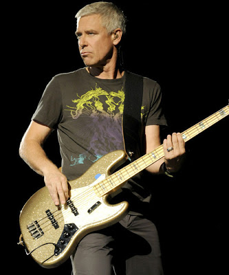
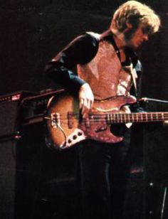
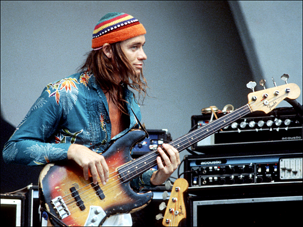
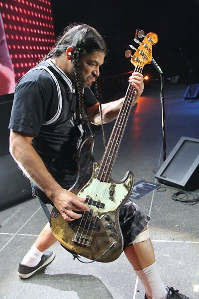

Jazz Bass
| Korpus | Gryf | Podstrunnica | Menzura | Przetworniki | Mostek |
|---|---|---|---|---|---|
| olcha jesion |
klon | palisander klon |
34 cale | 2x single coil | HiMass |
Pierwszy raz zaprezentowany w 1960 roku Jazz-Bass był przedstawiany jako model "Deluxe", podobnie jak jego sześciostrunny kuzyn - Jazzmaster. Przydomek "Jazz" dla tych obu gitar wziął się z założenia, iż bardziej smukła oraz zaokrąglona szyjka przypadnie do gustu gitarzystom jazzowym. Jazz Bass posiada dwa przetworniki typu single coil, z dwoma magnesami przypadającymi na każdą strunę. Takie rozwiązanie daje wzmocnione środkowe pasmo brzmienia. Pierwsze Jazz-Bassy posiadały dwa potencjometry regulujące głośność i brzmienie indywidualnie dla każdej przystawki. Instrumenty o takiej konfiguracji są dzisiaj poszukiwane przez wielu kolekcjonerów na rynkach gitar typu vintage, gdyż są one bardzo rzadkimi egzemplarzami. W roku 1963 Jazz Bass otrzymał trzy pokrętła; dwa z nich regulowały głośność przetworników, a trzeci - brzmienie końcowe.
Charakterystyczny wygląd J-Bassu jest naśladowany przez wielu renomowanych producentów, takich jak firma Sadowsky czy Modulus, oraz jest inspiracją dla wielu lutników. Budżetowe kopie gitary basowej Fendera są produkowane najczęściej na Dalekim Wschodzie.
Znani użytkownicy




© 2016 Łukasz Karczewski. Wszelkie prawa zastrzeżone.